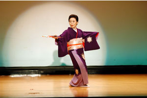
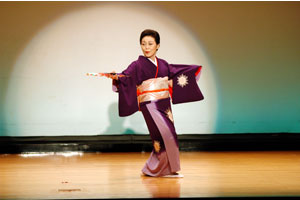

当研究所は、古典舞踊を基礎として、民謡舞踊・新舞踊・童謡舞踊など、 宝塚歌劇団でも踊られている振り付けのあらゆるジャンルの踊りを 楽しく稽古します。 初心者の方でも３ヶ月で１曲踊れるようになれます。 名取り、師範資格を目指す上級者も受け入れております。 日本伝統舞踊の紹介として、留学生や外国の方の見学や入門も歓迎いたします。 国際交流を目的とした海外公演にも参加しております。 また、ボランティア活動も積極的におこない喜ばれております。 |


 



|
1. |
お金のかからない日本舞踊を心がけています！ 安い費用で発表会ができるように工夫しております。 西崎の踊りは、重たい衣装やかつらなどを付けないので ほかの流派に比べると費用がかかりません。 |
2. |
自分の都合に合わせて稽古の予約が出来ます。 稽古日の振り替えの自由もきくので無駄がありません。 |
3. |
若い方でも稽古が続けやすい、学生割引、親子・姉妹・友人同士のペアー割引 などいたします。 |
4. |
月謝制です。 |
■ 住所： 福岡県飯塚市枝国402番地100
飯塚市穂波福祉総合センターふれあい「広場」ほなみ
■ TEL：080-3966-8206
（筑紫会支部 西﨑紫蓮）
■ 稽古日：第1.3土曜日（月2回） 13時～15時 (4月.5月）
第2.4土曜日 （月2回） 13時～15時 (6月以降）
■ 月謝：2,000円 (グループレッスン)